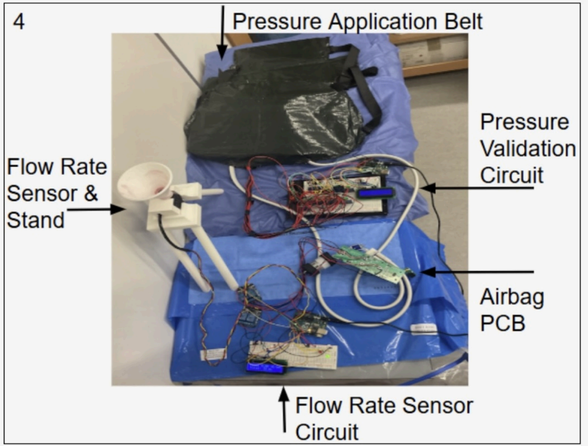
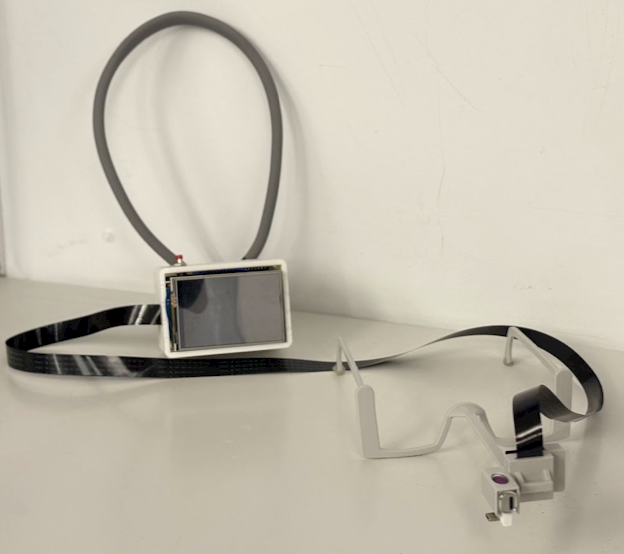
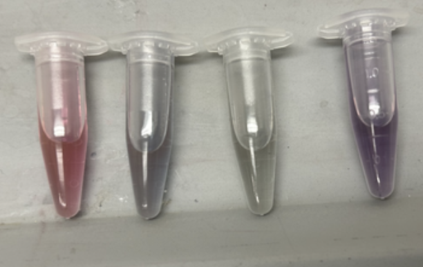
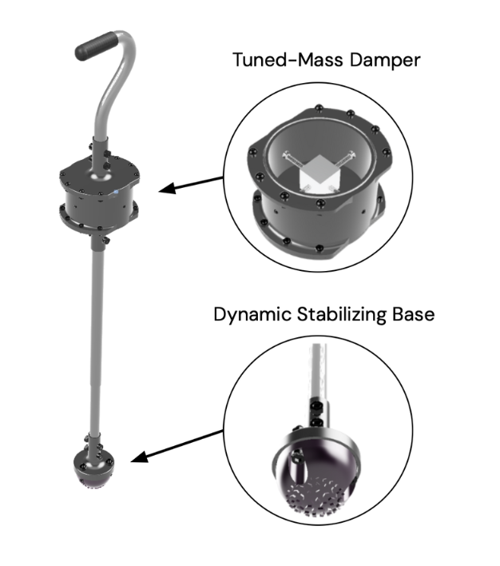
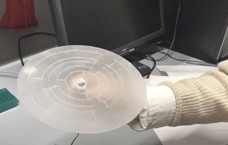
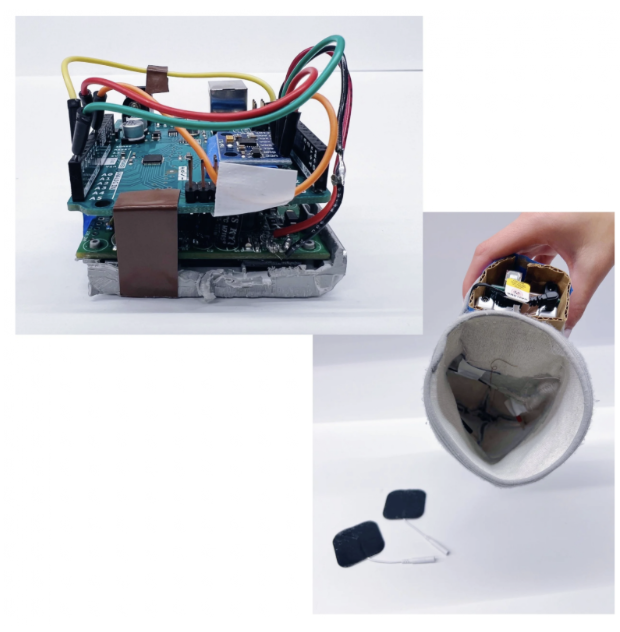
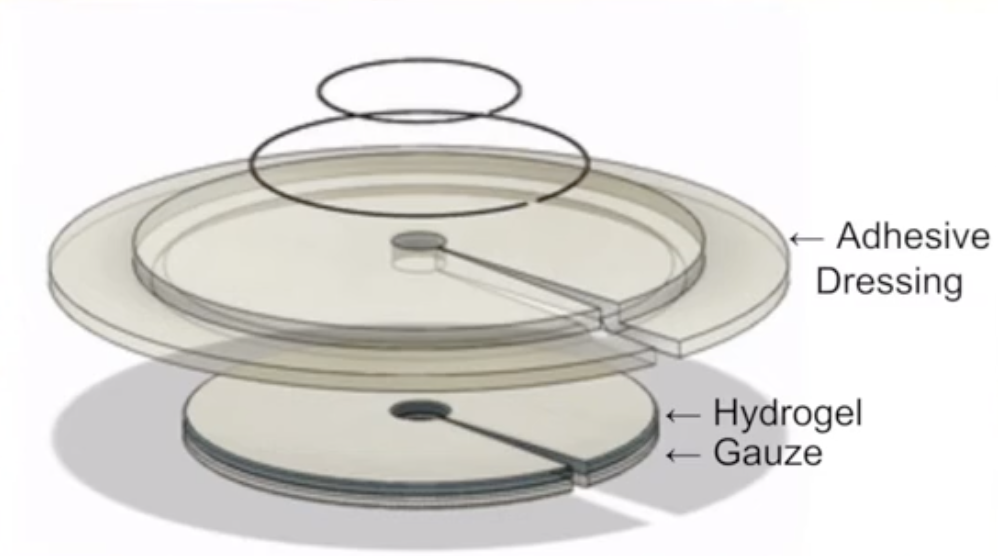
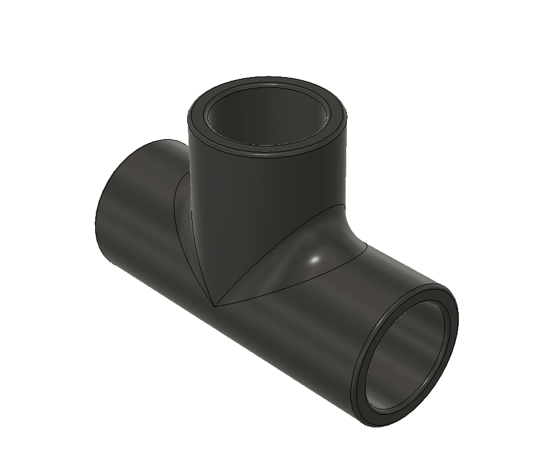
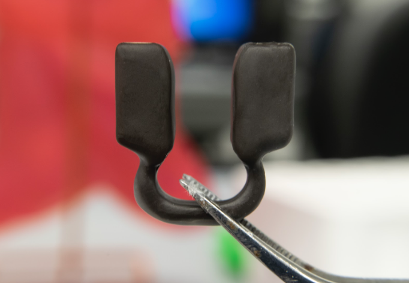
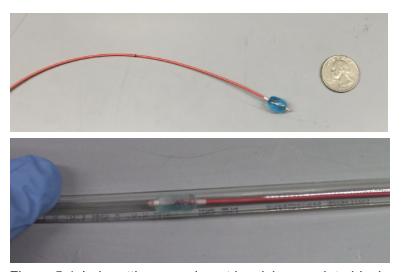

2025
HemBrace (Postpartum Hemorrhage Monitoring and Response System)
DEBUT developed HemBrace, a low-cost, reusable system for real-time detection and management of postpartum hemorrhage (PPH). The device combines a calibrated flow sensor with a responsive compression belt to measure blood loss and automatically apply graded uterine pressure when excessive bleeding is detected. Data is displayed through an LCD interface with color-coded indicators, while embedded sensors provide feedback to ensure safe and effective compression. Powered by Arduino-based control, the system operates autonomously and adapts to hemorrhage severity. Prototype testing demonstrated high accuracy in both blood loss measurement (96.8%) and pressure response (100%), and when used with existing non-pneumatic anti-shock garments (NASG), HemBrace offers a scalable, cost-effective solution for under-resourced settings.

2025
MeyeAttention (Pupillometry-Based Attention Diagnostic System)
DEBUT developed MeyeAttention, a low-cost, wearable diagnostic support device designed to improve ADHD screening through objective measurement of attention dysregulation. The system uses infrared pupillometry during a brief visual oddball task and applies machine learning algorithms to analyze pupil responses associated with cognitive attention states. By reducing assessment time from hours to under 15 minutes, MeyeAttention enables faster and more accessible screening. The platform also has potential for broader neurological applications, including traumatic brain injury, migraines, and photophobia.

2024
NanoLIST (Non-Invasive Lead Detection in Saliva)
DEBUT developed NanoLIST, a low-cost, rapid saliva-based test kit for detecting lead exposure. The system uses gold nanoparticles that aggregate in the presence of lead ions, producing a visible colorimetric shift. The test consists of a multi-chamber vial system containing reagents including deionized water, hydrochloric acid, gallic acid, and chloroauric acid. The user activates the reaction by mixing saliva with the reagents, initiating nanoparticle synthesis and enabling visual detection of lead contamination within 30 seconds.

2024
SteadyStride (Self-Stabilizing Cane for Parkinson’s Disease)
DEBUT developed SteadyStride, an assistive cane designed to reduce tremor-induced instability in individuals with Parkinson’s disease. The device integrates a tuned mass damper (TMD) within the cane shaft to attenuate tremor amplitude and a shock-absorbing thermoplastic polyurethane (TPU) base with textured rubberized treads to enhance ground stability. Experimental testing demonstrated an average 12.25% reduction in cane tremors, with 75% of users reporting improved stability and usability.

2023
MobiLab (Early-Stage Pancreatic Cancer Detection Platform)
DEBUT developed MobiLab, a lab-on-a-disk diagnostic platform for early detection of pancreatic cancer. The system utilizes microfluidic channels on a rotating disk platform operating at 2000 RPM to drive analyte transport via centripetal force and capillary action. Detection is achieved through gold nanoparticle-based colorimetric assays targeting biomarkers such as miR-143, miR-223, and miR-30e, enabling rapid and sensitive visualization of cancer-related signals.

2023
BPLP (Block Phantom Limb Pain System)
DEBUT developed BPLP, a sense-and-response system designed to mitigate phantom limb pain (PLP) in amputees. The device uses a gyroscope-based motion tracking system to determine the amputated limb's position within the gait cycle. At critical points—specifically when peak pain would normally occur—a TENS unit delivers targeted electrical stimulation to disrupt pain signaling. This coordinated system reduces perceived phantom pain by counteracting aberrant neural firing associated with limb absence.

2022
Intelli-Patch (Early Driveline Infection Detector)
DEBUT developed Intelli-Patch, a diagnostic adhesive patch for early detection of driveline infections in left ventricular assist devices (LVADs). The device functions as a "bullseye" sensor that monitors discharge levels and produces a colorimetric change when S. aureus concentrations exceed infectious thresholds. This early detection capability enables patients to seek timely medical intervention, with the potential to reduce infection-related mortality, reimplantation rates, and overall healthcare costs.

2020
CABG (Coronary Bypass Artery Graft Device)
DEBUT developed CABG, a device designed to improve the efficacy and reliability of coronary artery bypass grafting procedures. The device enhances ease of insertion and reduces postoperative complications, particularly blood leakage at the surgical site. It incorporates a novel attachment mechanism to improve arterial sealing while maintaining cost-effectiveness.

2019
SeptuClip (Intranasal Treatment for Allergic Rhinitis)
DEBUT developed SeptuClip, an intranasal drug delivery device designed as an alternative to traditional allergy medications. The device uses inhalation-facilitated transport to provide continuous, all-day symptom relief. SeptuClip is a disposable, clip-in device that attaches to the nasal septum, enabling locally targeted drug delivery while minimizing drug loss from exhalation.

2018
TUBLOX (Reversible Tubal Contraceptive Device)
DEBUT developed TUBLOX, a reversible tubal occlusion device designed as an alternative form of long-acting contraception. The system utilizes a minimally invasive catheter-based procedure in which a balloon catheter is inserted through the vaginal canal, uterus, and into the fallopian tube. The balloon is then inflated with a saline-dye solution and secured in place using a fast-acting adhesive to achieve tubal occlusion. The catheter is subsequently removed below the occlusion site. TUBLOX is designed to prevent fertilization for a minimum of six months and can be reversed upon patient request through surgical deflation and removal, with the option for replacement if desired.